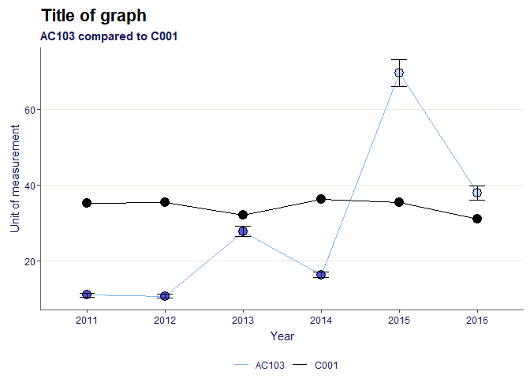
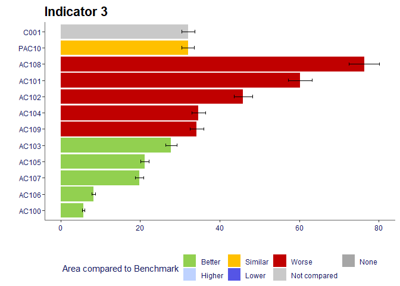

This is an R package to help users to easily reproduce charts that are displayed on Public Health England’s Fingertips data tool. Along with the fingertipsR package, this package can be used to help users bring the data on the website into their own outputs.
Installation
With remotes
You can install the latest development version from github using remotes:
# install.packages("remotes") remotes::install_github("PublicHealthEngland/fingertipscharts", build_vignettes = TRUE)
Example of some visualisations
Here are some examples of visualisations the package provides. See the vignette for a more comprehensive overview.
Trends
library(fingertipscharts) library(dplyr) # Create the data to plot df <- create_test_data() %>% arrange(IndicatorName) %>% mutate(Timeperiod = rep(c("2011", "2012", "2013", "2014", "2015", "2016"), each = 111)) country_val <- df %>% filter(AreaCode == "C001") %>% select(Timeperiod, Country_val = Value) # add the signifance for the local area points compared to the comparator df <- df %>% left_join(country_val, by = "Timeperiod") %>% mutate(Significance = case_when( LCI > Country_val ~ "Higher", UCI < Country_val ~ "Lower", TRUE ~ "Similar" )) # plot the trends p <- trends(df, timeperiod = Timeperiod, value = Value, area = AreaCode, comparator = "C001", area_name = "AC103", fill = Significance, lowerci = LCI, upperci = UCI, title = "Title of graph", subtitle = "AC103 compared to C001", xlab = "Year", ylab = "Unit of measurement") p

Compare indicators
# Create the data to plot, filtering for areas within a single parent, and also the parent and the national area region <- "PAC10" top_names <- c("C001", region) df <- create_test_data() %>% filter(IndicatorName == "Indicator 3", (ParentAreaCode == region | AreaCode %in% top_names)) # order the factor for the significance field so they appear in the legend in the desired order ordered_levels <- c("Better", "Similar", "Worse", "Not compared") df <- df %>% mutate(Significance = factor(Significance, levels = ordered_levels)) # plot compare areas chart p <- compare_areas(df, AreaCode, Value, fill = Significance, lowerci = LCI, upperci = UCI, order = "desc", top_areas = top_names, title = unique(df$IndicatorName)) p

Area profiles
dfspine <- create_test_data() p <- area_profiles(dfspine, value = Value, count = Count, area_code = AreaCode, local_area_code = "AC122", indicator = IndicatorName, timeperiod = Timeperiod, trend = Trend, polarity = Polarity, significance = Significance, area_type = AreaType, median_line_area_code = "C001", comparator_area_code = "PAC12", datatable = TRUE, relative_domain_text_size = 0.75, relative_text_size = 1.2, bar_width = 0.68, indicator_label_nudgex = -0.1, show_dividers = "outer", header_positions = c(-1, -0.7, -0.44, -0.35, -0.25, -0.15, -0.05, 1.08)) p